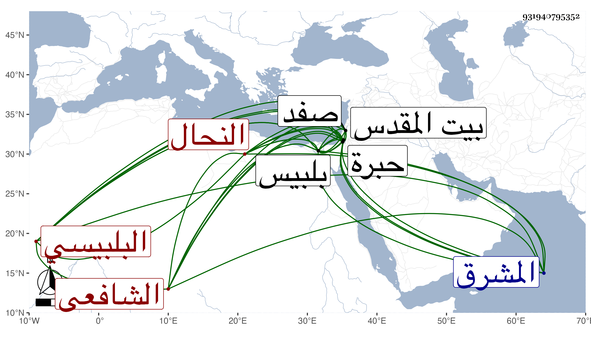

0902Sakhawi.DawLamic.ITO20230111-ara1.EIS1600.931940795352
Biography ID: 931940795352
إبراهيم بن خلف بن تاج بن صدقة البلبيسي الشافعي النحال ولد قبل سنة ثمانين وسبعمائة ببلبيس وقرأ بها القرآن ثم اشتغل بتربية النحل والتجارة فيما يخرجه الله منها فنسيه وحج مرتين الأولى في أوائل القرن وزار القدس والخليل وسافر إلى صفد وجاوز الاربعين وهو لا يعرف نظما ولا يحدث به نفسه إلى أن قدم عليهم واعظ يقال له الطنبدي فتكلم على قوله تعالى ألست بربكم قالوا بلى فنقل أن الله لما استخرج ذرية آدم من ظهره في صور الذر وقال لهم ألست بربكم انقسموا قسمين فقسم قالوا بلى وقسم سكت ثم انقسم كل قسم قسمين فقال قسم من الساكتين ليتنا أجبنا كما أجاب هؤلاء واستمر القسم الآخر على السكوت وقال قسم من المجيبين ليتنا سكتنا كما سكت هؤلاء واستمر القسم الآخر على إجابته فأما المجيبون والذين استمروا منهم على الإجابة يعيشون مؤمنين ويموتون كذلك والذين قالوا ليتنا سكتنا يعيشون مؤمنين لكونهم أجابوا ويموتون كفارا لكونهم تمنوا السكوت وأما الساكتون فالذين استمروا على السكوت منهم يعيشون كفارا ويموتون كذلك والذين قالوا ليتنا أجبنا يعيشون كفارا لسكوتهم أولا ويموتون مؤمنين لتمنيهم الإجابة في ثاني الحال ثم حكي أن عابدا عبد الله مائة سنة ثم حضرته الوفاة فاستدار نحو المشرق فاستعظم خادمه ذلك فقال له ما معناه أن نفسه حصل لها إعجاب فخذلت ومات على غير التوحيد فطار قلب الخادم خوفا وأكثر النحيب فبينا هو كذلك إذ طرق الباب فخرج فإذا راهب فقال ما شأنك قال أن راهبا منا مات فوجهناه إلى الشرق فتوجه إلى القبلة ومات مسلما فجئت إليك لتسأل لي شيخك ماذا نصنع به فقال أن شيخي قد مات إلى الشرق كافرا فهات ميتنا وخذ ميتكم فدفنوا الراهب بالزاوية ونقلوا الشيخ إلى مقبرة الرهبان وكان اسم الخادم عليا وكان في الخليل فاشتد خوفه لذلك إلى أن كان لا يفتر من البكاء ولا يهجع من النحيب فسمى الشيخ علي البكاء قال صاحب الترجمة فلما سمعت هذه الحكاية حصل لي منها ما أزعج نفسي وأطار عقلي وأدهش فكري وأطال غمي وأدام همي بحيث بقيت أياما لا أنام أصلا ولا آكل إلا كما يأكل العليل ولا شغل لي إلا الافتكار وأني من أي قسم أكون فبينا أنا ليلة أفكر إذ جرى على لساني كلام في معنى ما أنا فيه وكتبته في لوح كان عندي ثم تتابع حتى تم في هذه القطعة واستمر بعد ذلك ينظم في الفنون والأبحر والنظم سهل عليه جدا غير أنه لا يعرف النحو فنظمه في البحور كثير اللحن ولا عجب أن كان النحال لحانا وهذه القطعة من أحسن ما نظمه وقد كتبتها عنه سنة ست وأربعين ببلبيس وأولها :
| ضاع عمري في افتكاري | ولا أدري ما الخبر |
| وأصبح قلبي حزين | يا ترى أين المقر |
ومات بعد ذلك في .
